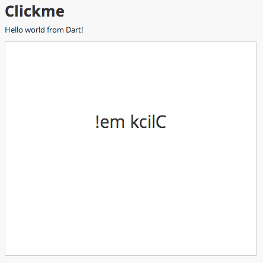
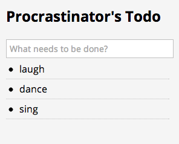
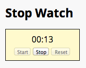

The Dart Tutorials teach you how to build web applications using the Dart language, tools, and APIs.
Who are you?
- You already know how to program in a structured language like C or Java.
- You are familiar with object-oriented programming.
- You might not know how to program the browser through the DOM (Document Object Model).
Let’s go! Follow the tutorials in order from left to right…or choose just the ones you need.
 Get started
Get started
Get Dart. Run two apps.
Get the sample code
Before moving on, get the code for all the tutorials' samples.- Download the ZIP file.
- Unzip it.
- Open the dart-tutorials-samples directory in Dart Editor.
- Go to the next tutorial, Connect Dart & HTML .
Connect Dart & HTML
Include a Dart script in an HTML page.

Add Elements to the DOM
Add elements to the web page and move them.
 Remove DOM Elements
Delete elements from the web page.

Install Shared Packages
Organize and share code at pub.dartlang.org.

Define a Custom Element
Create a custom HTML element using Polymer.
 Use Future-Based APIs
A first look at using Futures for asynchronous tasks.
Use Streams for Data
Use streams to manage sequences of data
Fetch Data Dynamically
Load data from a static file or from a server.

Get Input from a Form
Use forms and input elements to get data.

Use IndexedDB
Save data on the client with IndexedDB.

Write Command-line Apps
Learn about features that command-line apps need.
Write HTTP Clients & Servers
Communicate over the internet.